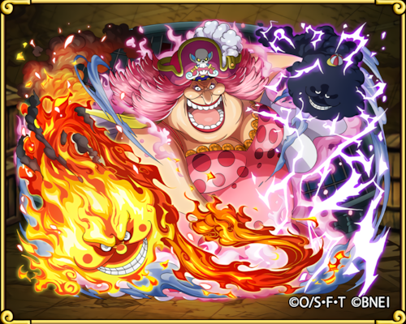

선장 빅 맘 샬롯 링링

신세계를 지배하는 사황의 일원으로 유일한 여성이다. 별명은 '빅 맘'. 별명대로 아들 46명, 딸 39명 도합 85명의 자녀가 있다. 모두 빅 맘의 낳은 자식이다. 18살에 장남 페로스페로를 낳은 것을 시작으로 이후 42년 동안 자식을 낳았다. 인생의 반절 이상을 임신부로 지낸 셈인데, 그 임신부 상태의 몸으로 신세계를 제패하고 해적계의 황제가 되었다는 뜻이다.[8][9] 빅 맘 해적단의 선장으로 선원들이 부르는 호칭은 '마마'. 해적이지만 평소에는 자신의 나라 '만국' 토트랜드에서 황제로 군림하고 있다. 웃음소리는 "하↗! 하하→하↘! 맘↗맘맘→맘↗마↘!" 이며[10][11] 1인칭은 오레.[12] 이름의 유래는 실존 해적인 샬롯 드 베리나 샬롯 뱃저로 추정된다.
빅맘 더 알아보기